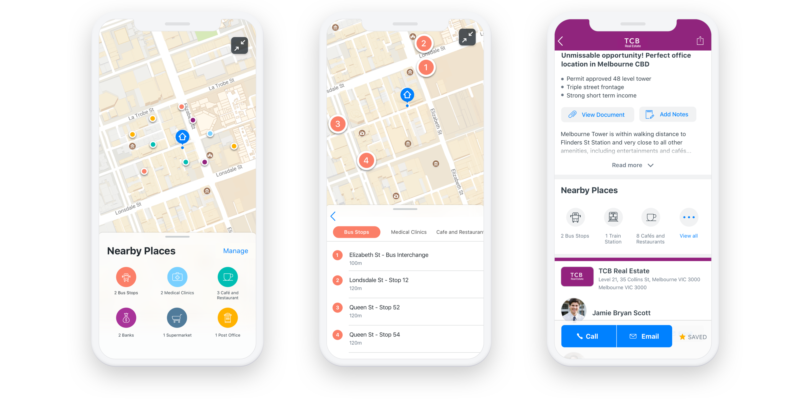
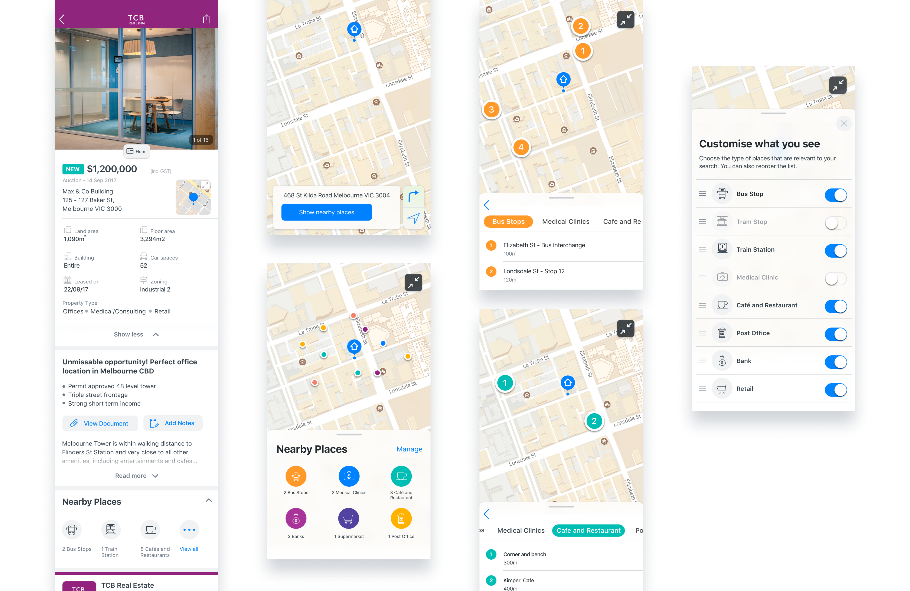

Nearby Places

Background
Realcommercial is a platform for people to find commercial properties to buy or to rent. One of the projects I worked on in RCA was Nearby places. It provides our users a way to check out the amenities around the property listings in the app.
There are many types of commercial property seekers, including office managers, retail shop owners, business owners, and investors. Each of them cares about different amenities. Our job is to provide an easy way for them to find the information they need to make the right decision.
The approach
I started the project with discovery research to understand the context and our users, before jumping straight to solutions. I held a workshop to involve the team in the research process, to identify any assumptions or hypothesis we wanted to validate. I then turned the outcome of the workshop into testing script and activities for the research session.
During the research sessions, I invited users from different segments and interviewed them about their search process to understand why nearby amenities are important. I asked how they currently use the online map and the type of things they would look for when they search for their commercial property. I also discovered that many people would drive around the properties they’re interested in to check out the amenities nearby.
I also created a high level (low fidelity) prototype to test out my assumptions. One of the key takeaways from the research was the importance of these amenities differs depending on the property type, type of business and location. For example, a CBD office seeker cares more about cafes and public transport, while a warehouse seeker wants to see freeway access and takeaway restaurants more. With that in mind, it’s important to design for customisation, so that different types of users can choose what they’d like to see and use it their way.
Not a map app
I had a lot of fun designing for this feature! One main thing I had to constantly remind myself and the team is that we’re not designing a map app. It was my responsibility to make sure the data is relevant to the property search journey and displayed in a clear and organised way.
From research, we learnt that most people want to see all the places in a glance. In some cases, they may want to zoom in the map or drill down to certain detail. Knowing our user behaviour, the design allows users to quickly see where the places are. If they’re interested in a particular type of amenity, they can get more detail with one click.

Usability testing
Putting the design in front of users helped us to validate the solution we came up with. Overall, the design concept was well-received. Participants told us that simplicity is the key. This reassured that we're on the right track.
On a personal note, I challenged myself to complete the testing prototype using Framer. As Framer has updated quite a bit in the past few years, it was a bit of a learning curve. However, being able to create a close to real experience allowed our participants to interact with the prototype without having to ‘imagine’ how things should work. I found that super helpful when it comes to mobile design testing. It helped me to quickly prototype different types of transitions and explore some micro-interactions.
There are other part of the project I cannot include here. However I’m happy to chat in person.